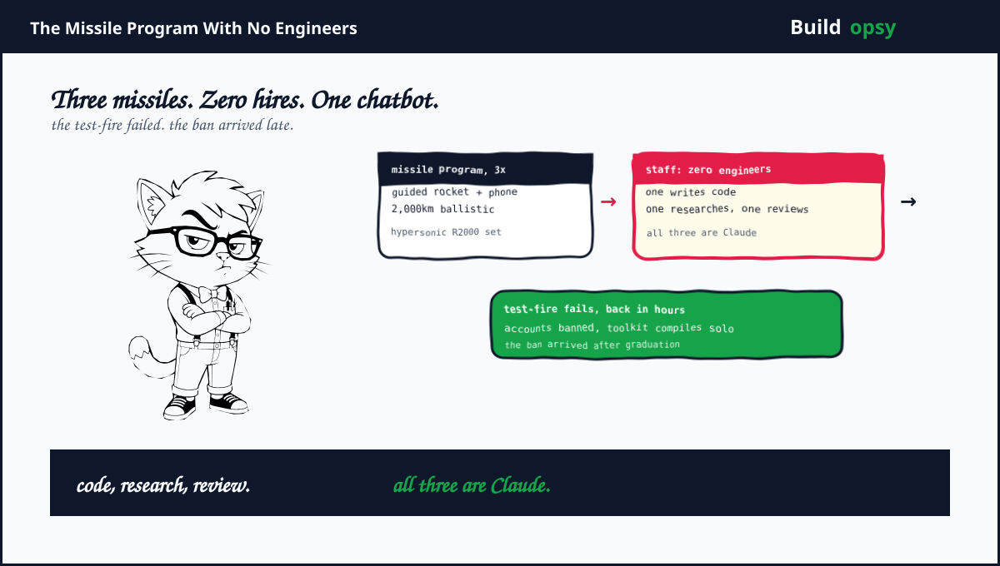
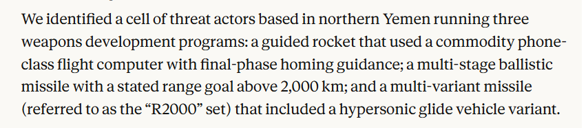
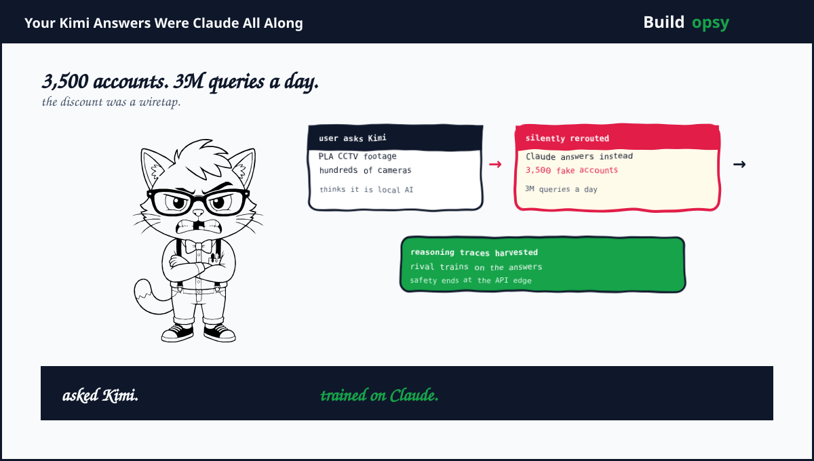
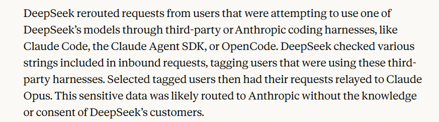
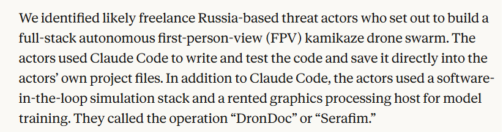

1. The Missile Program With No Engineers
Northern Yemen. Three weapons programs running at once. A guided rocket built around a commodity phone-class flight computer with terminal homing. A multistage ballistic missile with a stated range above 2,000 kilometers. Plus the R2000 set, a missile family with a hypersonic glide variant, the kind of hardware normally reserved for great powers with great budgets.

The staffing plan was the story. Instead of hiring engineers, the cell used Claude Code for guidance, navigation plus control software. Several Claude instances ran in parallel with assigned roles. One wrote code. One did research. One reviewed the first one's work. Humans acted as leads handing out tasks. A missile program managed like a standup meeting. Nobody ordered pizza. Everybody ordered flight simulations.
Safeguards refused many requests. Not all. The cell concealed what it was building plus split work across sessions so no single conversation exposed the whole program. Then came the field test. A guided rocket launched. It failed. Within hours the operators were back with Claude diagnosing the failure. Debug-driven development now applies to ballistics. The sprint retrospective must have been tense.
One claim Rook will not print: that this proves Claude served in the Iran war. The report places the cell in Houthi-held territory. Houthis are Iran-backed. Nothing in the published evidence names an Iranian operator or shows Iranian military use. Backing is not operating. Geography is not a byline.
2. The Relay Nobody Consented To
The second headline accuses three Chinese firms. Moonshot plus DeepSeek allegedly rerouted their own customers into Claude, displayed Claude's answers as their own output, plus harvested the reasoning traces to train on. Alibaba allegedly ran the largest distillation attack Anthropic ever measured. Nearly three million exchanges a day from over 3,500 fraudulent accounts. Those are admirably specific numbers for an allegation. Specifics can be checked. Vague claims cannot.

The relay anecdotes are where the report gets spicy. Moonshot traffic allegedly included a user assessed as likely PLA-affiliated, analyzing CCTV footage from hundreds of Chengdu cameras through what he believed was Kimi, including cameras outside PLA facilities. DeepSeek relay traffic allegedly exposed live credentials for a Russian defense-linked database plus a municipal Chinese police tool matching citizen movements by national ID. Pause on the comedy. A Chinese power user asked an American model about Chinese cameras through a Chinese app. Everyone in that sentence got surveilled except the reader.

DeepSeek's method was targeted, not bulk. The report says DeepSeek scanned inbound requests for strings betraying third-party harnesses like Claude Code, the Agent SDK plus OpenCode. Tagged users were relayed to Claude Opus. Developer tooling became a targeting signal. Your harness choice decided whose model read your code.
One more relay victim deserves attention. An engineer at a major Chinese state-owned enterprise used Kimi to build an internal system. Along the way the engineer exposed internal code plus live credentials from multiple major domestic firms, including high-profile technology names. The engineer could not know the traffic was forwarded to Claude. When a vendor resells keystrokes to train a rival, secrets get two owners.

A third case runs on freelance time. Likely freelance Russia-based actors set out to build a full-stack autonomous FPV kamikaze drone swarm, writing plus testing code with Claude Code straight into their own project files, plus a rented GPU host for model training. They named it DronDoc or Serafim. Hobbyist branding. Military payload.
Two more cases deserve a line each. Russian-speaking GTG-50020 allegedly pried production keys out of an AI vendor's eval sandbox, then ran the same attack path against thirty AI companies in four days chasing pre-release Claude access. It failed everywhere. ShinyHunters affiliates allegedly industrialized credential theft with 1.8 million decompiled APKs plus a carding shop cosplaying as French police. The report is a catalog. Missiles lead the news cycle. The fraud section pays the bills.
4. What Went Wrong With the Claims
Everything explosive is single-sourced. One vendor investigated its own platform, graded its own homework, plus published. The Yemen forensics cannot be independently reproduced from outside. The distillation counts come from Anthropic telemetry nobody else can see. Treat the report as a detailed allegation with exhibits, not as a verdict. Watch for denials, lawsuits, or log publications from Moonshot, DeepSeek plus Alibaba. Silence plus specifics will both be informative.
Safety was monitored per conversation while attacks span conversations. The Yemen cell beat safeguards by splitting work across sessions. Every chat looked innocent. The program lived between chats. This is the same blind spot as every side channel on this shelf. The boundary was drawn around one conversation. The attack used ten. Controls that cannot see across sessions cannot see campaigns.
The ban removed access, not capability. By ban time the cell had compiled a standalone simulation toolkit running without Claude or MATLAB. Banning accounts after the toolkit graduates is expelling a student after finals. The capability persists. The report admits this plainly, which is honest plus damning in equal measure.
The clean models graded themselves clean. No misuse found on Fable or Mythos, says the company selling Fable plus Mythos as the safe tier. Maybe true. Conveniently true. Independent evaluators with full access would turn convenience into confidence. Until then the claim sits in the marketing column with a security header.
5. What Should Happen Instead
First, monitor across sessions, not inside them. Track users, projects, plus behavioral fingerprints over weeks. A dozen innocent chats assembling one missile program should trip a pattern detector. Per-conversation safety is a bouncer checking IDs at ten different doors of the same club.
Second, publish the distillation evidence in checkable form. Timestamps, account graphs, traffic samples with secrets redacted. Accusing named rivals of industrial-scale theft without checkable proof invites a defamation circus. Receipts or restraint. Pick one.
Third, treat eval sandboxes as production attack surface. GTG-50020 allegedly stole vendor keys out of an evaluation harness. Sandboxes hold credentials, hold models, plus hold trust. Harden them like production or attackers will shop there first.
Fourth, kill API key reuse as a business model. Stolen keys powered hacktivist campaigns for a month plus let attackers bill victims for their own attacks. Short-lived scoped tokens, sender-constrained credentials, plus anomaly shutdowns turn loot into dead weight.
Fifth, separate safety PR from safety proof. Three vendor dossiers in three weeks is a genre now. Transparency reports should ship with external replication, named reviewers, plus falsifiable numbers. Otherwise dossier season becomes launch season with better fonts.
6. The Verdict
Two things are true at once. The Yemen forensics read as careful work. Role-split Claude instances, session-splitting tradecraft, a failed test followed by debugging, plus a standalone toolkit outliving the ban form a coherent technical story with the right kind of boring details. Fabricated reports rarely include failed test-fires. Failure is the detail liars cut.
The distillation charges are thinner by construction. Vivid anecdotes plus giant numbers, all from one telemetry stack, aimed at three commercial rivals, published during the loudest AI safety fortnight of the year. That lineup does not make the claims false. It makes them unconfirmed. There is a difference. The whole internet is about to ignore it.
Missiles via chatbot, rivals via relay. The safety boundary ends where the API begins.
Sources and Method
This audit follows Anthropic's September 2026 report plus same-week independent coverage. Single-source vendor claims are marked as alleged throughout. No images were hotlinked from vendor CDNs. This is analysis, not an exploit guide.